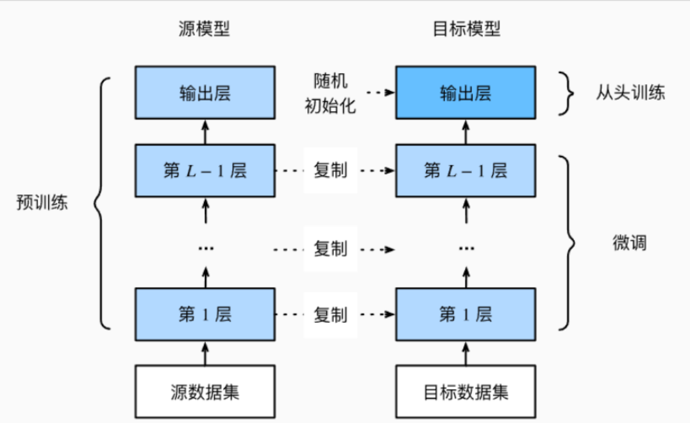
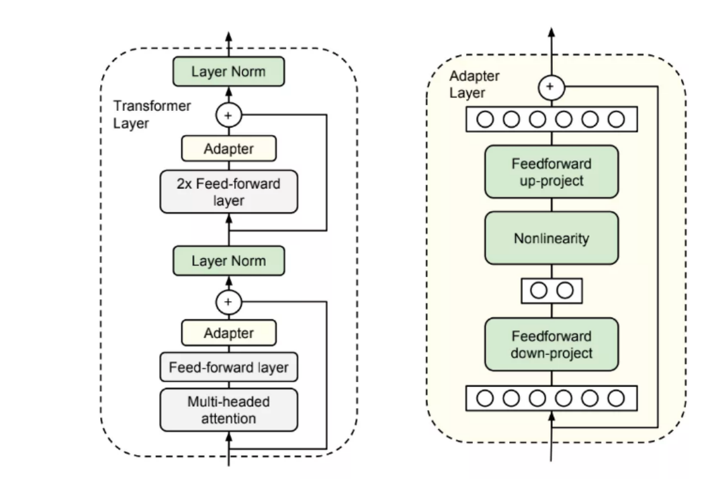
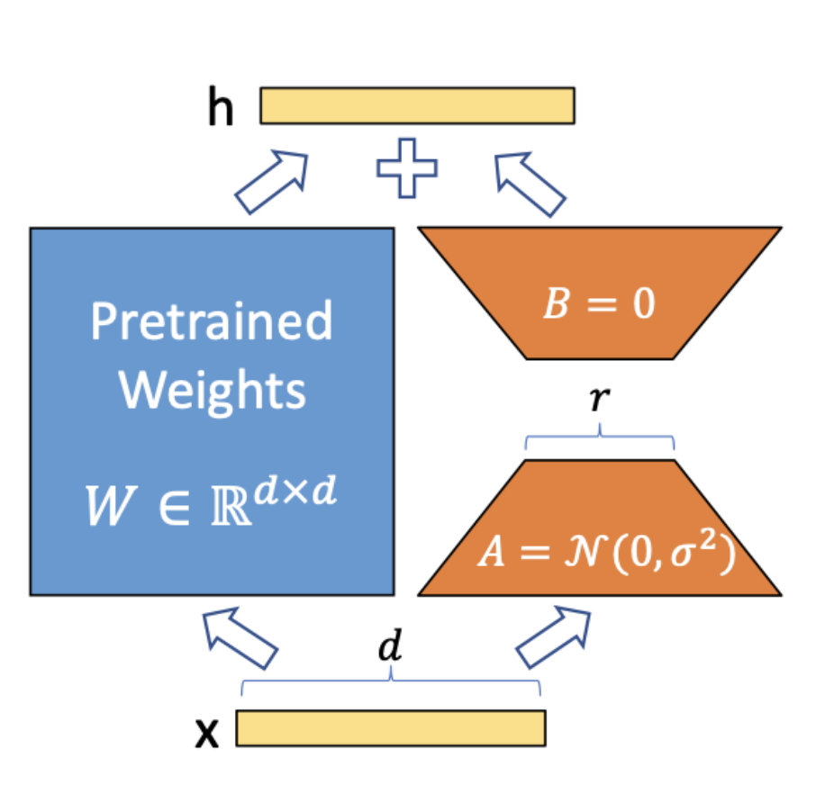
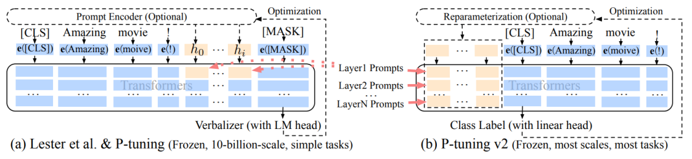
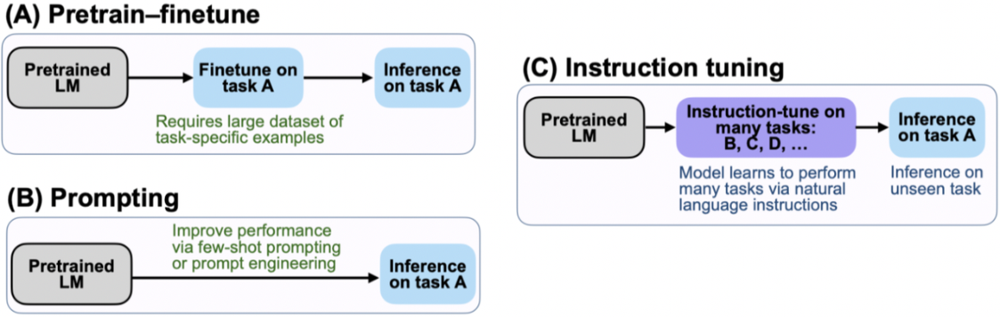
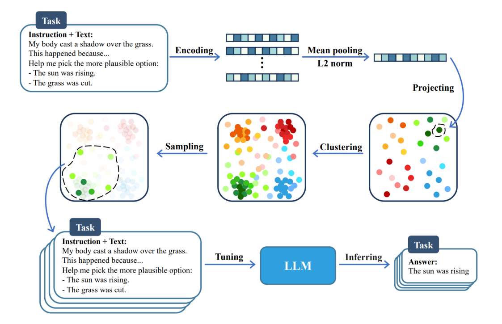
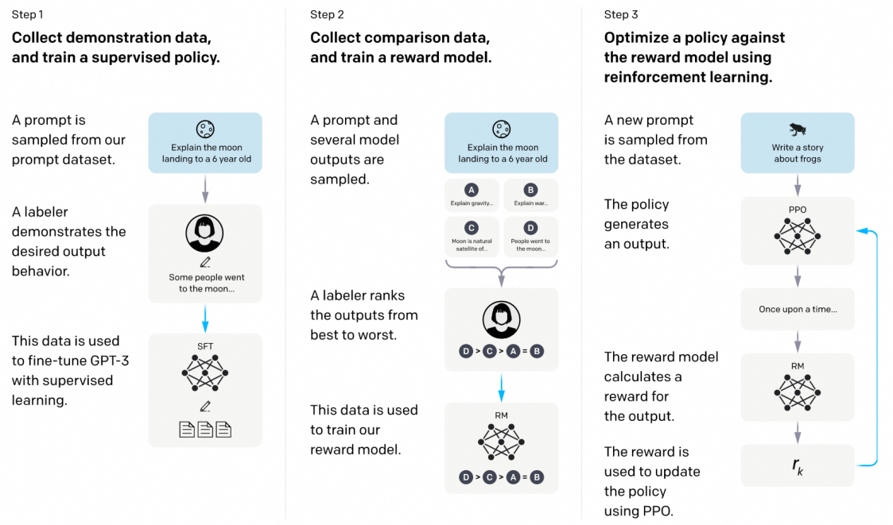
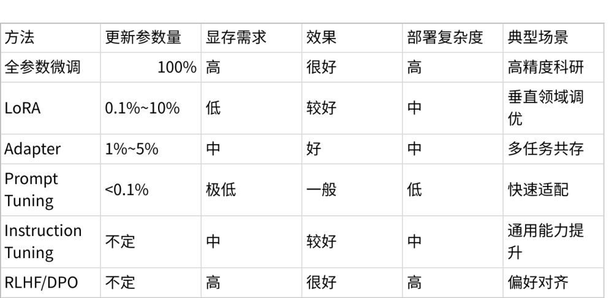

微调技术的发展与演进
现在的大语言模型发展得非常快，从几亿参数到千亿参数，不仅模型越来越大，能力也越来越强。但 是在实际工作中，我们很少会从零开始训练一个这样的巨无霸模型，因为那样的成本和资源需求实在 太高了。
更多的时候，我们会先用一个现成的强大模型，然后根据自己的需求对它做一些微调，让它更懂我们 的领域、更符合我们的业务和价值观。
微调并不是一开始就有这么多方法，它的技术路线也是一步步发展起来的。
1. 微调的背景与动机
说到微调，首先要想清楚：我们为什么不直接训练一个新模型，而是要在别人已经训练好的模型上动 手脚？最直接的原因就是⸺成本。训练一个千亿参数的模型，不仅需要超级昂贵的硬件，还得准备海 量的高质量数据。对绝大多数企业和个人来说，这是不可能完成的任务。
第二个原因是，通用模型虽然强大，但它并不一定懂你所在的行业，比如医疗、法律、金融。这就像 一个见多识广的人，可能对很多话题都能聊几句，但在某些专业领域还是需要补课。 最后，还有一个很现实的考虑：数据安全和合规。很多公司希望模型能按照自己的价值观、安全要求 和业务逻辑来回答问题，这就需要对模型进行定制化训练。
换句话说，微调的出现，是为了用更低的成本、更少的资源，让模型更安全、更专业。
2. 技术发展时间线与主要方法
2.1 2018 年及以前：全参数微调
早期的做法很直接⸺把整个模型的参数全部拿出来训练。这种方式简单粗暴，效果也非常好，但代价 就是显存消耗大、训练时间长、算力要求高，基本上是科研机构或者小模型时代的标配。 如果用几句话总结这种方法，可以这么看待：
-
更新全部参数，效果最佳
-
显存和算力需求高
-
适合小模型或科研任务
2.2 2019 年：特征提取
这个阶段的思路是，不去动模型内部的结构，而是把它当作一个固定的特征提取器，用它处理数据， 然后在输出的特征上接一个新的分类器或其他下游模型。这样训练很快，成本也低，但对于需要深度
理解和生成的任务就不太够用了。

简而言之，它的特点是：
-
冻结主干网络
-
快速训练、低成本
-
复杂任务适配能力弱
2.3 2019 年底：Adapter 方法
研究者发现可以在 Transformer 的每一层之间加一个小模块，这个模块的参数很少，但却能学习特定 任务的特征。训练时只更新这些模块，主干网络保持不动。这种方法既节省资源，又方便在多个任务 之间切换不同的 Adapter。

用一行话概括 Adapter：
-
在模型层间加入可训练模块
-
参数更新量小，可多任务复用
-
可能带来推理延迟
2.4 2021 年初：LoRA
LoRA 是一个非常有影响力的方法，它把需要更新的大矩阵分解成两个小的低秩矩阵，只训练这部分参 数，最后还能把它们合并回原模型里，部署起来很方便。它的出现，让大模型的定制化变得更轻量、 低成本，也因此在开源社区大火。

总结一下 LoRA 的优势和特点：
-
低秩矩阵分解，只更新小部分参数
-
显存需求低，部署方便
-
社区应用广泛
2.5 2021 年中：提示微调
提示微调的思路是，模型本身不动，只在输入端加一些可学习的提示向量，让模型的行为发生变化。 它的好处是训练极快、成本极低，但在复杂生成任务上的效果一般。

一句话描述提示微调：
-
训练少量提示向量
-
速度快、成本低
-
复杂任务表现有限
2.6 2022 年：指令微调

指令微调的重点是，让模型通过大量高质量的指令-回答数据来学会遵循自然语言的指令。这一步对大 模型变得更易用、更通用起到了关键作用，ChatGPT 的成功也离不开这一技术。

概括来说，指令微调就是：
-
用指令-回答数据训练
-
提升模型遵循指令和通用交互的能力
提升模 遵循指令和通用交
•
能力
2.7 2022 年末至 2023 年：偏好对齐
在模型能理解指令之后，人们还希望它更符合人类的价值观和偏好。这就有了 RLHF 和 DPO 等方法。 它们用人类的反馈来调整模型的回答倾向，从而提升安全性和用户体验。

简单理解就是：
-
RLHF：监督微调 + 奖励模型 + 强化学习
-
DPO：直接优化偏好差异，跳过奖励模型
-
提升模型安全性和价值观一致性
3. 方法对比
不同的微调方法，就像不同的改装方式，各有优缺点。把它们放在一起对比，可以更直观地看到适用 场景和成本差异：
